Префектура Киото · Миядзу и Инэ · святилища и еда
Коно-дзиндзя и Инэ: от родины богини еды к красному сакэ и суши у воды
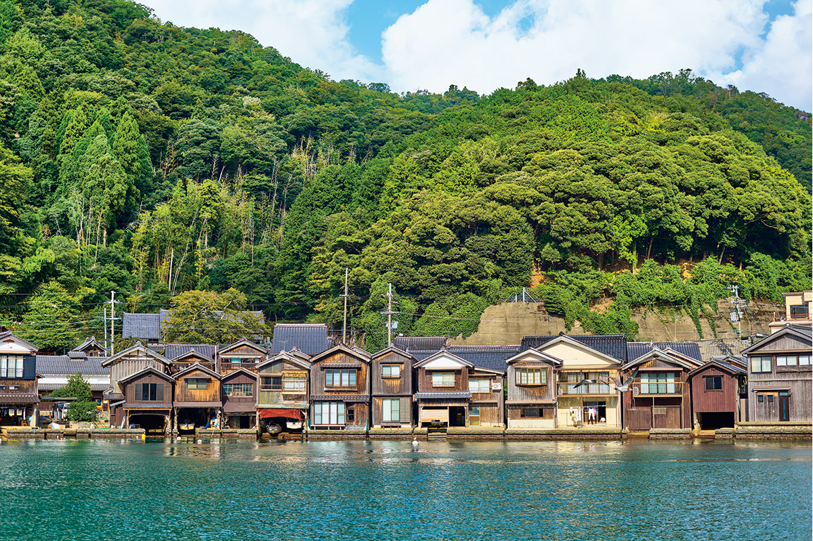
Семь городов и посёлков на севере префектуры вместе называют «Киото у моря». Здесь стоит древнее святилище, которое называют прародиной Исэ, а в соседней рыбацкой деревне Инэ варят красное сакэ и подают суши из рыбы, пойманной утром в бухте.
Святилище
Коно-дзиндзя: место, где началась страна
Святилище Коно-дзиндзя стоит на земле, откуда видна Аманохасидатэ, длинная коса через залив в городе Миядзу. Ему поклонялись ещё в эпоху богов, как говорят японские мифы, и это главное святилище старой провинции Танго.
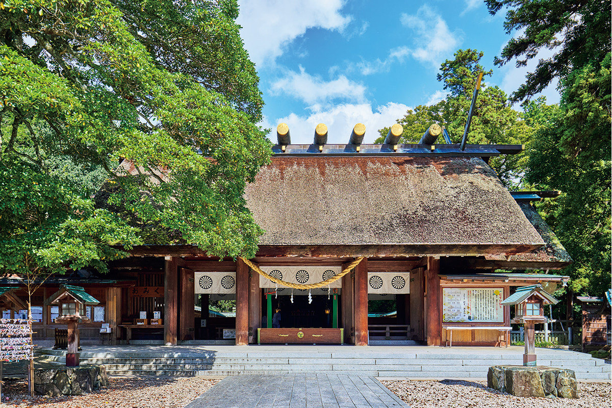
Предание о косе записано в отрывке из «Танго-но куни фудоки», описания провинции, составленного в период Нара. Бог Идзанаги поставил лестницу, чтобы ходить между небом и землёй, лестница упала, и так появилась Аманохасидатэ. Святилище стоит у самого её основания.
«Это место не похоже ни на какое другое. Его называют землёй, с которой началась страна»
помощница главного жреца святилища
Святилище из поколения в поколение хранит род Амабэ. Своим предком он считает бога Хикохоакари, которому сегодня посвящено святилище, а нынешний главный жрец принадлежит уже к 83-му поколению рода.
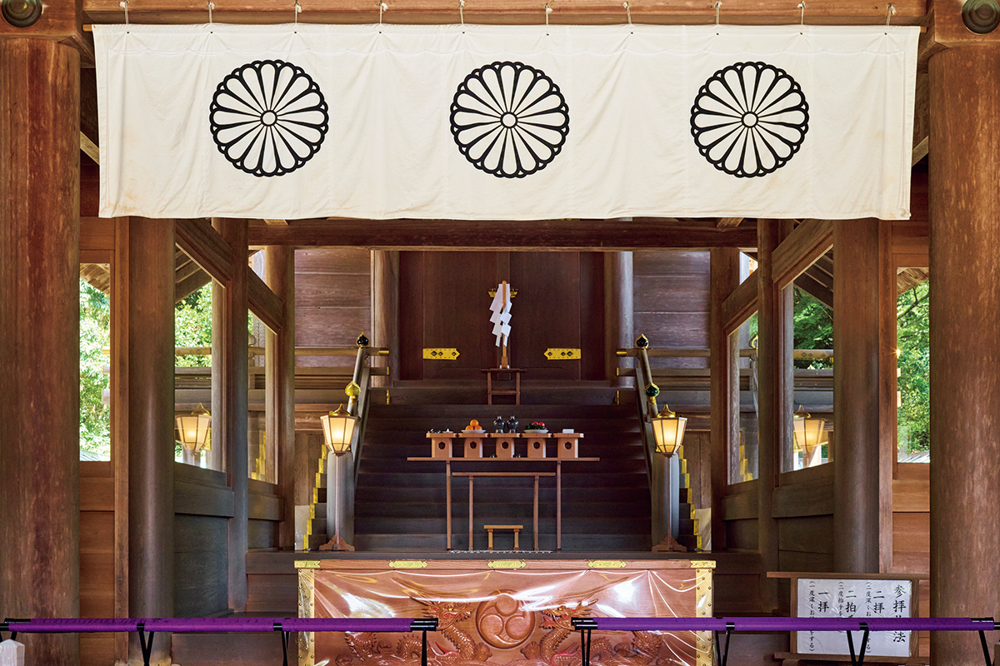
На перилах главного зала закреплены шары суэтама пяти цветов: синего, жёлтого, красного, белого и чёрного. Они обозначают пять стихий китайской натурфилософии: дерево, огонь, землю, металл и воду. Кроме Коно-дзиндзя такие шары есть только на главных залах внутреннего и внешнего святилищ Исэ.
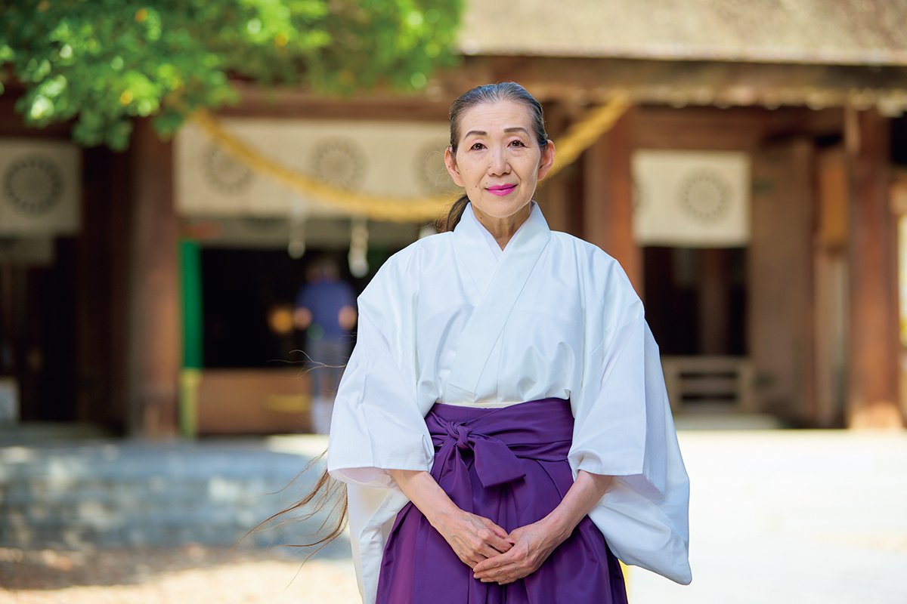
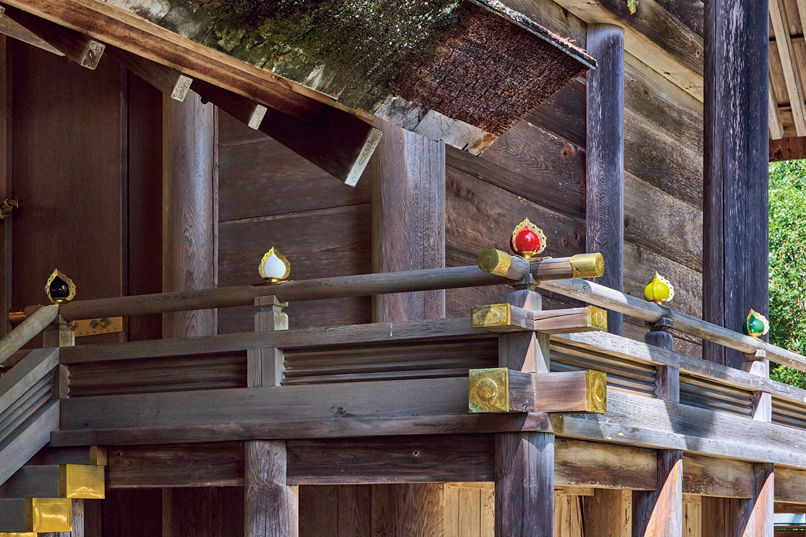
Святилище Коно-дзиндзя
- Адрес
- префектура Киото, Миядзу, Огаки, 430
- Телефон
- +81 772-27-0006
- Часы работы
- февраль–ноябрь 7:30–17:00, декабрь–январь до 16:30
- Сайт
- motoise.jp
Внутреннее святилище
Манаи-дзиндзя: земля богини еды
Выше по склону стоит Манаи-дзиндзя, внутреннее святилище Коно-дзиндзя. Сегодня его знают как место особой силы. Здесь почитали Тоёукэ, богиню, которая ведает изобилием всякой еды. Предание говорит, что из-за неё сюда перенесли и богиню солнца Аматэрасу, которую почитали при императорском дворе. Четыре года ей поклонялись здесь в святилище Ёса-но мия.
Потом Аматэрасу перенесли во внутреннее святилище Исэ, а Тоёукэ во внешнее. Поэтому Коно-дзиндзя и называют «Мото-Исэ», то есть «прежний Исэ». Выходит, что родина богини еды и есть исток японской кухни, а Тоёукэ до сих пор главное божество Манаи-дзиндзя.
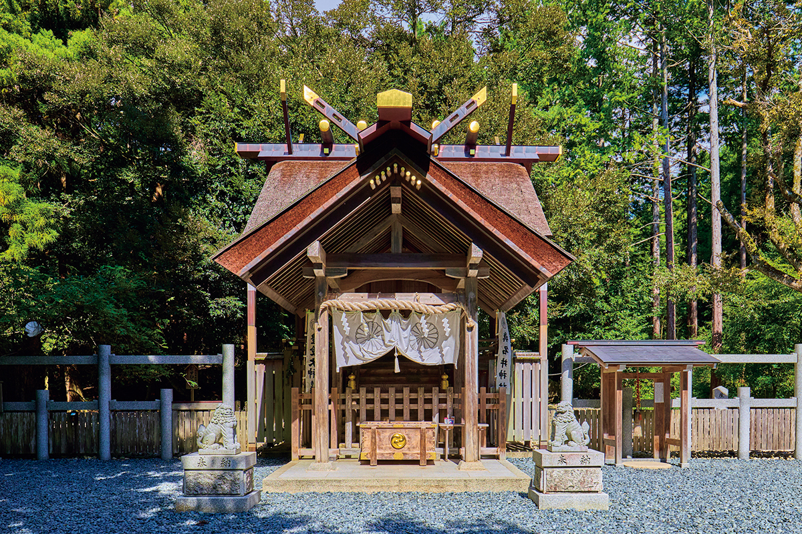
«Тоёукэ ведает всей едой. Если, вспоминая древность, благодарить её за дары, благодарность доходит и до продуктов, и до тех, кто их вырастил и приготовил. Тогда и еда становится богаче»
помощница главного жреца святилища
За главным залом сохранились ивакура, священные камни, в которых жили боги ещё в древности, когда залов не строили. В восточном главном камне почитают Тоёукэ, в западном Аматэрасу.
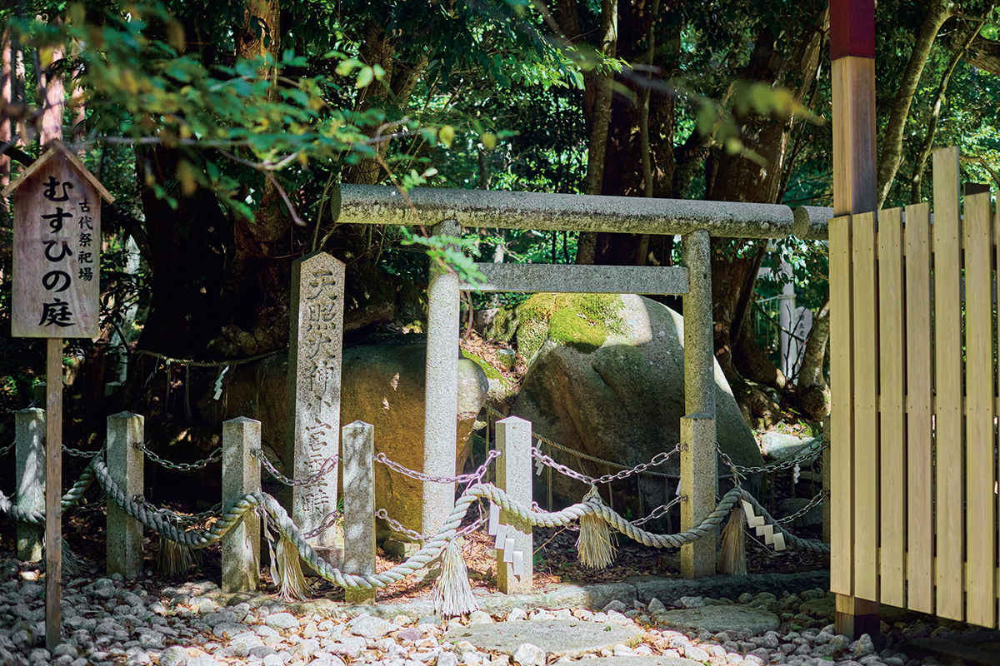
По словам помощницы жреца, два камня означают небо и землю, солнце и луну, воду и огонь, свет и тень. Когда вместе почитают божеств противоположной природы, сохраняется равновесие, и такой обряд не прерывается со времён Дзёмон. Хикохоакари, бог Коно-дзиндзя, приходится внуком Аматэрасу и несёт начало света и огня, а Тоёукэ в Манаи-дзиндзя отвечает за тень и воду. Поэтому здесь советуют посетить оба святилища: так тело и душа приходят в равновесие, и легче почувствовать себя частью природы.
Святилище Манаи-дзиндзя
- Адрес
- префектура Киото, Миядзу, Огаки, Мороока, 86
- Часы работы
- территория открыта всегда
Сокровища
Родословная и два зеркала
Род Амабэ втайне хранил несколько сокровищ. Это «Амабэ-си кэйдзу», самая древняя из сохранившихся в Японии родословных, внесённая в список национальных сокровищ, и два священных зеркала. Зеркало «Хэцу-кагами» сделано около 2050 лет назад, при династии Ранняя Хань, а «Окицу-кагами» около 1950 лет назад, при Поздней Хань. Другая родословная рода, «Амабэ-си кантю кэйдзу», рассказывает, что зеркала Хикохоакари получил от небесного предка и почитал с ними Тоёукэ. Эти родословные и зеркала связывают мифы с древней историей Японии.
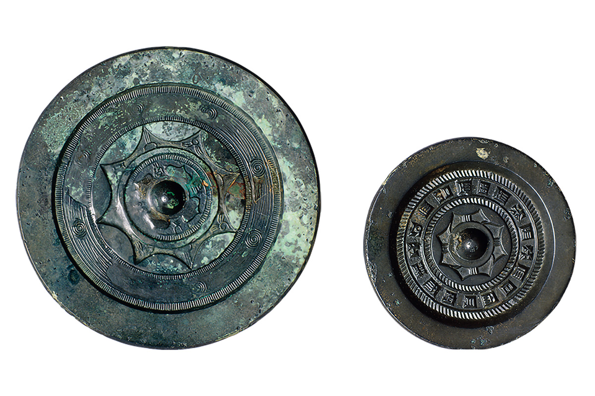
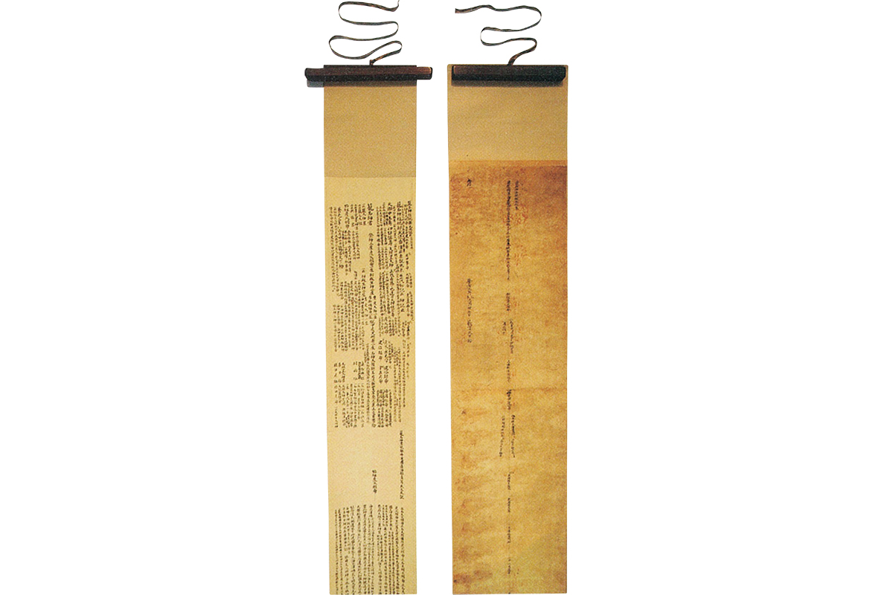
Инэ
Кафе над бухтой
Посёлок Инэ лежит на северо-востоке полуострова Танго, и это самая узнаваемая рыбацкая деревня «Киото у моря». Бухта здесь смотрит на юг, что для побережья Японского моря редкость, а вход в неё прикрывает необитаемый остров. Поэтому вода спокойна круглый год, и рыболовство здесь всегда было в силе. Вдоль бухты стоят дома с двускатными крышами, и у большинства внизу устроен эллинг для лодки: такие дома называют фуная.
INE CAFE находится в комплексе «Фунаябиёри», и сидишь здесь не просто у моря, а прямо над ним. Утром солнце блестит на воде бухты, а за окном ряд за рядом стоят фуная. Под густой чизкейк на этот вид смотришь с тихой ностальгией.
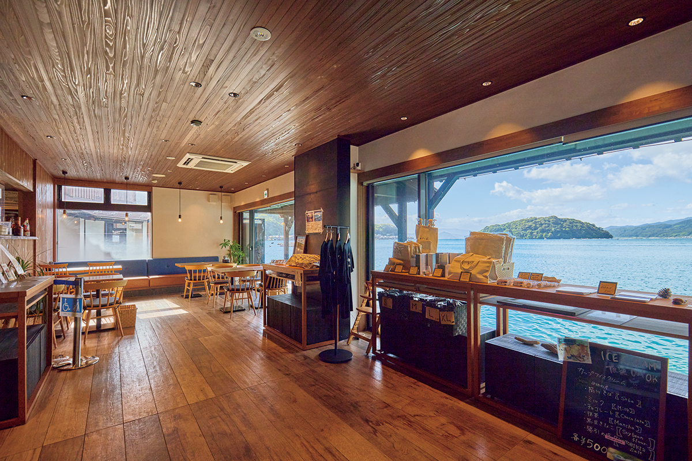
«Летом вода в Инэ такая прозрачная, что со второго этажа видно, как плывут рыбы. Бывает, что в бухту заплывают дельфины»
управляющая кафе
Кафе открылось в 2017 году, и его облик навеян домами-фуная. Сладости и напитки делают из продуктов Инэ, например из местных яиц и сезонных фруктов. Есть и рыбная миска в духе гавайского поке из рыбы по сезону.
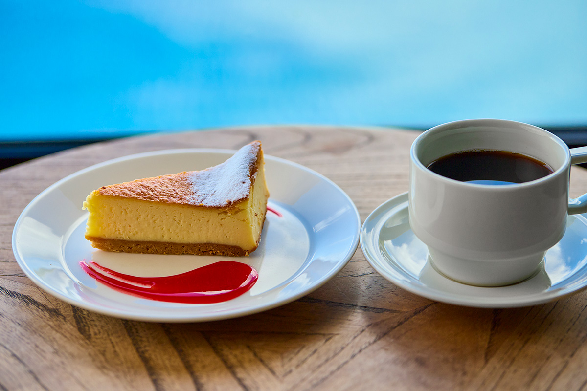
INE CAFE
- Адрес
- префектура Киото, уезд Ёса, Инэ, Хирата, 593-1 (комплекс «Фунаябиёри»)
- Телефон
- +81 772-32-1720
- Часы работы
- 10:30–17:00 (последний заказ 16:30), обед 11:00–14:30; время меняется по сезонам, с собой продают только напитки и мороженое
- Сайт
- funayabiyori.com
Сакэ
«Мукаи сюдзо»: красное сакэ у самого моря
Дальше по изгибу бухты стоит «Мукаи сюдзо», единственная сакэварня посёлка. Её основали в 1754 году, и о ней говорят, что это сакэварня, ближе всех в Японии стоящая к морю. Варят здесь всего 500 коку в год, это маленькая сакэварня. Известность в мире ей принесло «Инэ Манкай», сакэ, которое создала тодзи, главный мастер сакэварни, Кунико Мукаи.
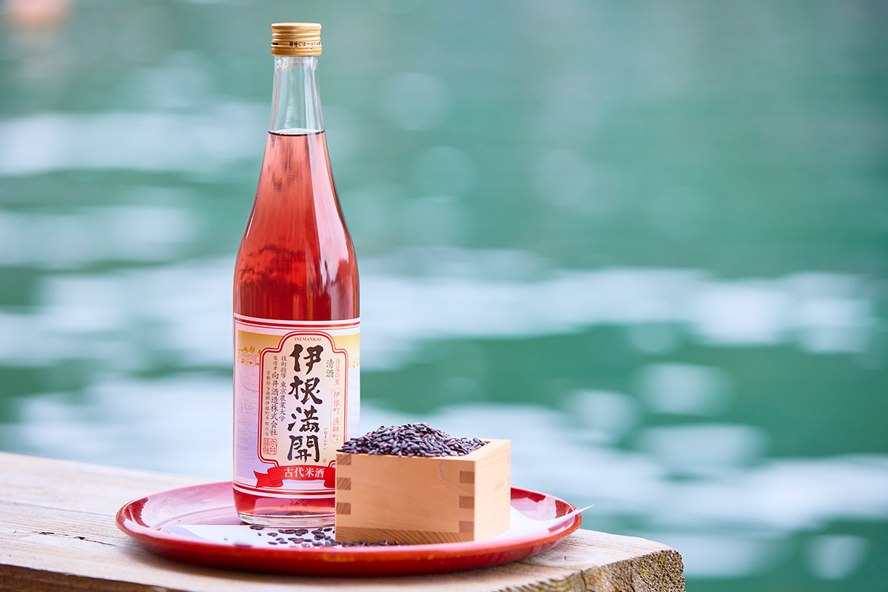
Кунико Мукаи окончила факультет пивоварения и бродильных производств Токийского сельскохозяйственного университета, вернулась домой и через год неожиданно стала тодзи. Она спорила с работниками сакэварни, но упорно продолжала варить. Вместе со своим университетским наставником она задалась вопросом: можно ли сделать красное сакэ из красного древнего риса? Так появилось «Инэ Манкай», красное сакэ, какого до тех пор не было. Цвет у него розовый, как у розового вина, а вкус ягодный, кисло-сладкий. Это сакэ подавали императорской семье, на саммите G20 в Осаке и в копенгагенском ресторане noma, который называли лучшим в мире.
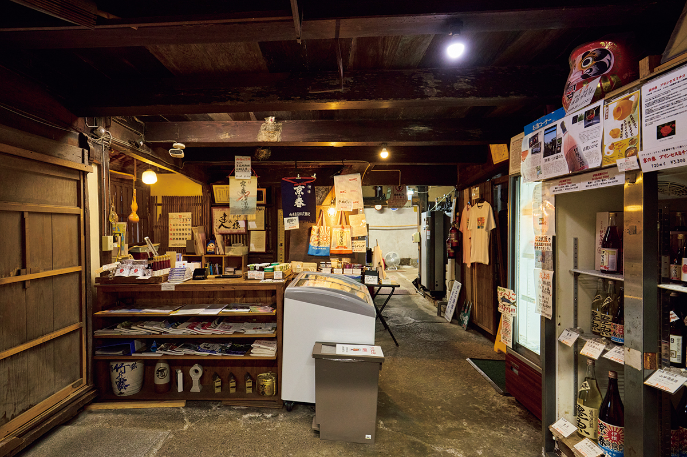
С появления «Инэ Манкай» прошло четверть века, но Кунико Мукаи до сих пор ищет лучшую смесь риса и придумывает новые сорта. Энергии в ней как в солнце, и Инэ она любит больше всех.
«Хочу делать то, чего не делают другие, и чтобы через сакэ люди узнали Инэ. Здесь рыба, только что из моря, по-настоящему вкусная!»
Кунико Мукаи
Сакэварня больше 270 лет использует дом-фуная как цех для закладки сакэ. Кунико Мукаи стала первой женщиной среди тодзи школы Тадзима и варит сакэ с 1999 года. Всё сакэ здесь дзюммай, только из риса, без добавленного спирта, а старые способы кимото и ямахай она вернула к жизни.
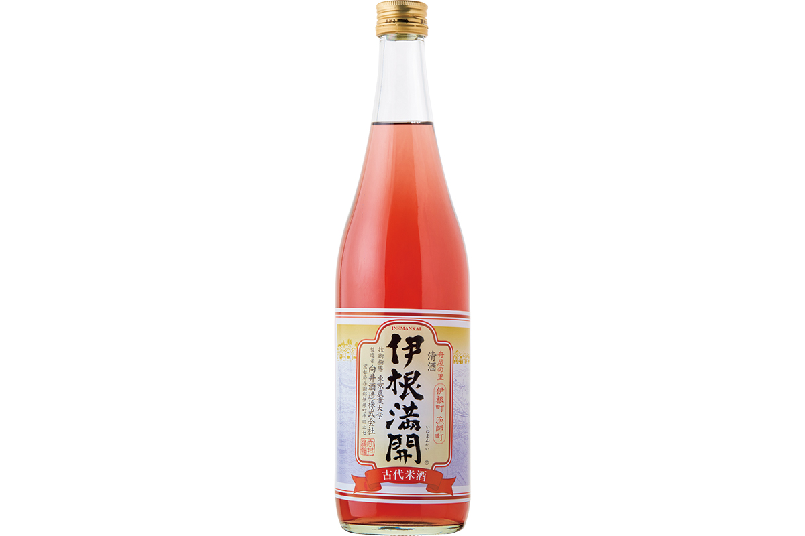
«Мукаи сюдзо»
- Адрес
- префектура Киото, уезд Ёса, Инэ, Хирата, 67
- Телефон
- +81 772-32-0003
- Часы работы
- 9:00–12:00, 13:00–17:00
- Выходные
- четверг, новогодние праздники
- Цены / Вход
- экскурсий по сакэварне нет
Суши
«Суши Итии»: вечер у стойки
Вечером небо над бухтой меняет цвет до тёмно-алого, а на тихой воде отражаются силуэты фуная. В это время мы зашли в «Суши Итии».
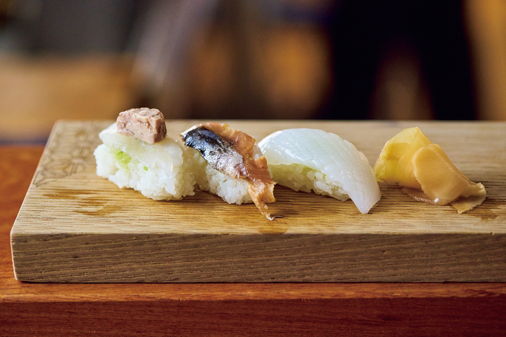
Хозяин учился в ресторанах японской кухни в городе Киото, а потом около 20 лет был шеф-поваром в известном рёкане Инэ «Абурая». За плечами у него больше полувека у плиты, и итогом этой карьеры он сделал суши-бар на восемь мест у стойки в родных местах. Открылся он в 2021 году рядом с причалом прогулочных катеров по бухте Инэ.
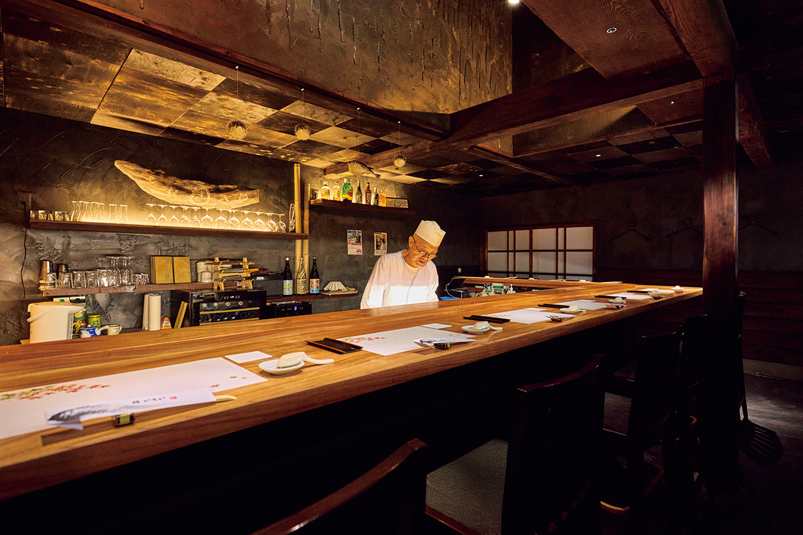
Главное для хозяина: местные продукты. Он знает море Инэ и его рыбу, выбирает лучший сезонный улов, а для риса берёт кошихикари из Инэ, выдержанный полтора года. Плотный кальмар аори-ика с сильной сладостью, концентрированный вкус скумбрии хэсико, печень рыбы кавахаги, густая, как фуа-гра. Всё это морские дары, из которых складывается жизнь Инэ, и попробовать их вместе большая роскошь. Для суши здесь берут мягкий, насыщенный уксус «Тидори-су» из Киото.
«Скоро начнётся время для жирного желтохвоста из Инэ и рыбы ягара»
хозяин «Суши Итии»
В следующий раз хочется остаться на ночь в доме-фуная, а утром сходить в рыбный порт Инэ: покупать рыбу там могут и приезжие.
«Суши Итии»
- Адрес
- префектура Киото, уезд Ёса, Инэ, Хидэ, 116-4
- Телефон
- +81 90-5155-5621
- Часы работы
- 17:00–22:00 (последний заказ 21:30)
- Выходные
- понедельник, четверг, воскресенье
Фото: Косаку Китадзима.